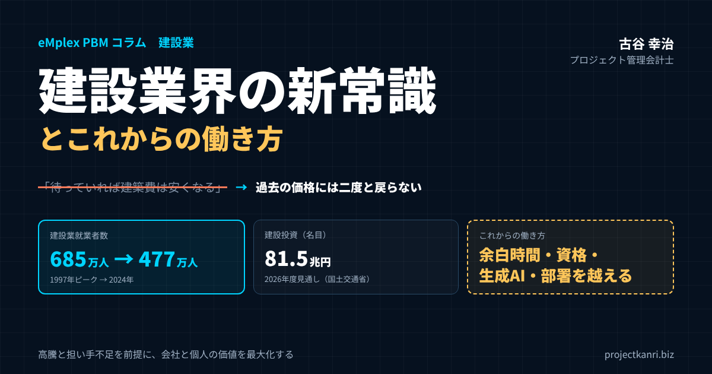

建設業界の新常識とこれからの働き方―建築費高騰・担い手不足の時代を生き抜く会社と個人の戦い方

結論：建設業界の新常識とは「高い建築費・少ない担い手・限られた時間」を前提にすること
プロジェクト管理会計研究所の古谷です。建設・不動産の会社の経営者や社員の皆さんとお話ししていると、ここ数年、「建設業界の常識が変わった」という声を本当によく聞くようになりました。建築費、人手、資材、働き方。どれも、ほんの十数年前とはまったく違う前提で考えなければならなくなっています。本稿では、私がプロジェクト管理会計士として200社を超える企業を支援してきた経験と、公的な統計を重ねながら、建設業界の新常識と、そこで働く一人ひとりのこれからの働き方を整理してみたいと思います。マクロ経済の大きな波を正面から受け止めたうえで、会社と個人の価値をどう最大化していくか。その設計図を描くことが本稿の目的です。
最初に結論を申し上げます。建設業界の新常識とは、次の三つを「一時的な異常」ではなく「これからずっと続く前提」として受け入れることです。第一に、建築費は過去の水準には二度と戻らないこと。第二に、建設業の担い手は減り続け、人件費は上がり続けること。第三に、だからこそ、一人ひとりの時間の使い方と、仕事の付加価値が、会社と個人の命運を分けること。
この記事の要点：建設業界の新常識
- 建築費：過去の価格には二度と戻らない。高騰を前提にした見積・契約・事業計画が必須
- 担い手と人件費：就業者は685万人（1997年）→477万人（2024年）。時間外労働の上限規制も適用され、人件費の上昇は不可避
- 資材：日本は世界の小さな買い手に。資材価格は世界の需要で決まり、下がる理由は乏しい
- 働き方：労働時間ではなく余白時間の使い方、資格、生成AI、ムダな仕事の削減、部署を越える力で差がつく
- 会社：工事・案件ごとの原価と見込みを毎月見える化し、価格転嫁と人への投資の根拠にする
私はこの変化を、「神話」と「新しい現実」の対比で説明するようにしています。神話とは、「待っていれば、いつか建築費は安くなる」という期待です。新しい現実とは、「過去の価格には二度と戻らない。高騰を前提としたビジネスモデルの構築が必須」という認識です。この対比こそが、建設業界の新常識の核心だと私は考えています。
建設業界に長くいる方ほど、価格や人手の状況には波があることを知っています。バブル期の高騰と崩壊後の下落、リーマンショック後の落ち込みと震災復興・五輪需要での回復。だから今の高騰も、いずれ落ち着くのではないかと考えたくなります。しかし、今回の変化は、景気の波ではなく、人口構造と世界の資源需要という、簡単には元に戻らない構造の変化によって起きています。波が引くのを待つのではなく、新しい水位を前提に船を設計し直す。それが、今の建設業界に求められている発想の転換です。
本稿の前半では、建設業界の新常識を六つに整理します。建築費、担い手と人件費、資材価格、住宅・不動産市場、資格と専門性の価値、そしてデジタル化と週休2日です。後半では、その新常識の中で、これからの働き方がどう変わるのかを、余白時間、生成AI、「動いているだけの仕事」の見直し、部署の垣根を越えることの四つの観点からお伝えします。最後に、会社の側に求められる新常識として、高騰を前提にしたビジネスモデルと管理会計の考え方、そしてよくある質問をまとめました。
本稿で特に大切にしたいのは、マクロの話で終わらせず、最後は社員一人ひとりの「時間の使い方」と「人生への向き合い方」にまで落とし込むことです。建築費や人手不足の話は、経営者や管理職だけの問題だと思われがちです。しかし、その影響は、毎日の仕事の進め方、身につけるべき技能、評価のされ方、そして給与にまで及びます。建設業界の新常識は、会社の経営の新常識であると同時に、そこで働く一人ひとりのキャリアの新常識でもあるのです。
私自身、新卒で入社したのは千葉県の不動産デベロッパーである朋友建設でした。入社から2年後、会社は和議という局面を迎えます。バブルの時代につくられた「土地も建物も値上がりし続ける」という常識が崩れたとき、その常識を前提にしていた事業はひとたまりもありませんでした。常識が変わったことに気づくのが遅れることの怖さを、私は身をもって知っています。だからこそ、今の建設業界の変化を「新常識」として早く受け入れることの大切さを、強くお伝えしたいのです。
建設業界の新常識①：建築費は過去の水準に戻らない
具体的な例で考えてみましょう。平成10年ごろ、千葉県の大網白里のあたりでマンションを建てたときの建築費は、1戸あたり1,100万円台だったと聞きます。それが今では、当時の3倍から4倍の水準になっています。「1戸1,400万円でも安い」と言えた時代は、もう終わったのです。
この感覚は、統計でも裏付けられます。国土交通省が公表している建設工事費デフレーターは、建設工事の価格の動きを示す指標ですが、2010年代半ばから上昇を続け、2021年以降は資材価格の高騰と人件費の上昇が重なって、上昇のペースが一段と速まりました。地域や構造、規模によって差はありますが、建築費が「一時的に高い」のではなく「段階的に切り上がった」という実感は、多くの建設会社やデベロッパーの方が共有しているはずです。
| テーマ | 古い常識（神話） | 建設業界の新常識（新しい現実） |
|---|---|---|
| 建築費 | 待っていれば、いつか安くなる | 過去の価格には二度と戻らない。高騰を前提にする |
| 人件費 | 景気が落ちれば職人は余る | 担い手は減り続け、人件費は上がり続ける |
| 資材 | 日本は大口の買い手で価格交渉力がある | 世界の需要で価格が決まり、日本は買い負ける |
| 働き方 | 長時間働けば何とかなる | 時間外労働に上限。時間内の質と余白時間で差がつく |
| 価格の決め方 | 受注者が泣いて吸収する | 改正建設業法のもと、根拠を示して協議し分かち合う |
一方で、建設の需要そのものは落ちていません。国土交通省の建設投資見通しによれば、名目の建設投資額は2024年度の約74兆円から、2026年度には81.5兆円に達する見通しです。名目の金額が伸びている背景には、物価の上昇が含まれていますが、少なくとも需要が急減して価格が下がるという状況にはありません。需要は維持され、供給の側、つまり人と資材の制約が厳しくなっている。この組み合わせが、建築費が下がらない構造をつくっています。
ここで大切なのは、建築費の高騰を「嘆く」のではなく「前提にする」ことです。前提にするとは、具体的にはどういうことでしょうか。見積の段階で、過去の単価ではなく、直近の実勢価格と、工期中の上昇の見込みを織り込む。契約の段階で、資材価格の変動に応じて請負代金を見直す条項や、変更協議の手順を明確にしておく。事業計画の段階で、建築費の上昇を販売価格や賃料に転嫁できる企画かどうかを見極める。どれも当たり前のことですが、「いつか下がるだろう」という期待が頭のどこかに残っていると、こうした備えが甘くなります。
2024年に成立した改正建設業法は、まさにこの点を後押ししています。資材価格の高騰などのおそれがある場合に、受注者が契約前にその情報を発注者に通知し、契約後に実際に高騰した場合には、受注者が請負代金の変更を協議できる仕組みが整えられました。2025年12月には、中央建設業審議会が勧告する「労務費の基準」を踏まえ、著しく低い労務費による見積りや契約を禁止する規定なども全面的に施行されています。価格の上昇を、発注者と受注者がきちんと話し合って分かち合う。これも、建設業界の新常識の一つです。
プロジェクト管理会計の視点から付け加えると、建築費が上がる局面で最も危ないのは、受注の時点の見積と、実行の段階の実際の原価との差が、工事が終わるまで見えないことです。工期が1年を超える工事であれば、その間に資材も労務費も上がります。工事ごとに実行予算を立て、毎月の原価の実績と完成までの見込みを更新し、価格の上昇が利益をどれだけ削っているかを早めに把握する。その情報があって初めて、発注者との変更協議に、根拠のある数字を持って臨めるのです。
建築費の上昇は、発注者の側の意思決定にも影響します。計画していた建物の予算が合わなくなり、計画の延期や規模の縮小、仕様の見直しが起きる。その結果、建設会社にとっては、受注の機会が先送りされたり、受注した後に仕様の変更が繰り返されたりします。高騰を前提にするとは、自社の見積を守ることだけでなく、発注者が意思決定しやすいように、コストの見通しと選択肢を早い段階から示すことでもあります。設計の初期の段階から、概算のコストと、仕様を変えた場合のコストの差を示せる建設会社は、発注者にとって頼りになるパートナーになります。
もう一つ見落とせないのが、金利の動向です。長く続いた低金利の時代が終わり、借入金の金利が上がり始めると、建設の事業費に占める金融のコストも増えます。建築費の高騰と金利の上昇が重なれば、事業の採算はさらに厳しくなります。事業計画の段階で、建築費だけでなく、金利や工期の延長のリスクも含めて、複数のシナリオで収支を試算しておくことが、これからの建設・不動産事業の新常識です。
建築費の高騰を前提にするうえで、社内で共有しておきたいのが、「過去の実績の単価は参考にとどめる」という考え方です。類似の工事の実績は、工種や数量の構成を考えるうえでは今も役に立ちますが、単価そのものは、時期が古いほど現在との差が大きくなります。実績のデータを使うときは、いつの単価なのかを必ず確認し、その後の上昇を補正する。この小さな習慣が、見積の精度を大きく左右します。
建設業界の新常識②：担い手は減り続け、人件費は上がり続ける
二つ目の新常識は、人の問題です。建設業の就業者数は、平成9年（1997年）の685万人をピークに減少を続け、現在は480万人を下回っています。総務省の労働力調査では、2024年平均で477万人です。四半世紀あまりで、約3割の担い手が失われた計算になります。
しかも、残っている職人さんの高齢化が進んでいます。建設業の就業者は、55歳以上が3割以上を占める一方、29歳以下は1割程度にとどまります。高齢化は、生産性の低下にもつながります。経験豊かな職人さんの技術は貴重ですが、体力的な負担の大きい作業を、これまでと同じペースで続けることは難しくなります。
結論は明快です。「需要過多×供給激減＝人件費の暴騰は不可避」。建設投資はおおむね維持されているのに、それを担う人が減っている。需要と供給のバランスから考えれば、人の値段、つまり人件費が上がるのは当然の帰結です。公共工事設計労務単価も、2013年度以降、毎年のように引き上げられてきました。
| 項目 | 内容 |
|---|---|
| 建設業就業者数 | 1997年 685万人（ピーク）→ 2024年平均 477万人 |
| 年齢構成 | 55歳以上が3割以上、29歳以下は1割程度 |
| 時間外労働の上限規制 | 2024年4月から建設業にも適用（原則月45時間・年360時間、特別条項でも年720時間以内など） |
| 公共工事設計労務単価 | 2013年度以降、毎年度のように引き上げ |
| 改正建設業法 | 労務費の基準を踏まえた著しく低い労務費の見積り・契約の禁止など（2025年12月全面施行） |
※出典：総務省「労働力調査」、国土交通省ほか。
2024年4月からは、建設業にも時間外労働の上限規制が適用されました。原則として月45時間、年360時間、特別な事情がある場合でも年720時間以内などの上限が設けられ、違反には罰則があります。災害の復旧・復興の事業など一部の例外を除き、これまで「納期に間に合わせるために残業と休日出勤で乗り切る」という働き方は、法律の上でもできなくなりました。同じ人数でこなせる仕事の量は、時間の面からも制約を受けるようになったのです。
担い手の減少と労働時間の上限は、建設会社の経営に二つの課題を突きつけます。一つは、限られた人と時間で、どれだけの付加価値を生み出せるかという生産性の課題です。もう一つは、人件費の上昇を、受注価格にきちんと反映できるかという価格の課題です。改正建設業法の労務費の基準は、後者を制度の面から支える仕組みですが、実際に価格に反映できるかどうかは、自社の原価を根拠をもって説明できるかにかかっています。
私が支援先でお勧めしているのは、工事ごとに、どれだけの人の時間を使ったのかを記録することです。職人さんや施工管理の担当者の工数を工事ごとに記録しておけば、労務費の実績が分かり、次の見積の精度が上がります。人件費の上昇が利益をどれだけ圧迫しているかも、工事の単位で見えるようになります。担い手が減る時代には、人の時間が最も貴重な経営資源です。その使い方を数字で見ることが、経営の出発点になります。
担い手の確保に向けて、業界全体の取り組みも進んでいます。建設キャリアアップシステム（CCUS）による技能者の資格や就業履歴の見える化と、それに基づく処遇の改善。公共工事を中心とした週休2日の推進。外国人材の受け入れの拡大。現場の作業を省力化するICT施工やプレキャスト化。いずれも、限られた担い手で建設を続けていくための取り組みです。こうした流れは、建設業で働く人の処遇が、これから確実に良くなっていく方向を示しています。担い手が少ない時代は、裏を返せば、技能と経験を持つ人が正当に評価される時代でもあるのです。
経営者の方にお伝えしたいのは、人件費の上昇を「コストの増加」とだけ捉えないでほしいということです。人件費が上がるのは、人の価値が上がっているからです。その価値に見合う付加価値を生み出せるよう、教育に投資し、道具を整え、ムダな仕事を減らす。そして、生み出した付加価値を、適正な価格として発注者に求める。人件費の上昇を、生産性と価格の両面から吸収していくことが、担い手不足の時代の経営の基本になります。
担い手の減少は、協力会社の経営にも影を落としています。後継者がいないために廃業する専門工事業者や、職人の高齢化で受けられる仕事の量が減っている協力会社は少なくありません。元請の建設会社にとって、協力会社は事業を支えるパートナーです。適正な価格での発注、無理のない工期、支払条件の改善、技能者の処遇改善への協力。協力会社とともに担い手を守る姿勢が、結果として自社の施工能力を守ることにつながります。
建設業界の新常識③：資材価格は世界の需要で決まる
三つ目の新常識は、資材の問題です。鉄を例に、日本の立ち位置の変化を見てみましょう。平成10年ごろ、日本の鉄の消費量は世界の約1割を占めていました。それが2021年には約3％にまで下がっています。日本の消費量が大きく減ったというより、世界全体、とりわけ新興国の消費量が爆発的に増えたためです。今や中国の鉄の消費量は日本の十数倍、インドでも日本を上回る規模に達しています。
かつての日本は、世界の資材市場で大きな買い手でした。大量に買うことで、価格の交渉力も持っていました。しかし今では、日本は世界の中で小さな買い手の一つにすぎません。はっきり言えば、「発展途上国のインフラ投資に買い負ける日本で、材料費が下がる理由は一つもない」のです。
鉄筋の価格も、かつては1トンあたり数万円で手に入った時代がありましたが、今では10万円を大きく超える水準が当たり前になっています。時期や地域、規格によって水準は異なりますが、鉄筋をはじめとする鋼材の価格が、かつてとは一段違う水準に切り上がっていることは、建設業に携わる方なら誰もが実感しているところでしょう。鋼材だけでなく、木材、セメント、設備機器、電線なども、世界の需要と為替の影響を受けて価格が動くようになりました。
資材価格が世界の需要で決まるということは、自社の努力だけでは価格をコントロールできないということです。では、何ができるのか。一つ目は、価格の変動を早く知ることです。主要な資材について、仕入れの単価の推移を工事ごとに記録しておけば、どの資材がどれだけ上がり、利益にどの程度影響しているかが分かります。二つ目は、価格の変動を契約に織り込むことです。先ほど述べた改正建設業法の変更協議の仕組みや、物価の変動に応じて請負代金を見直す条項を活用します。三つ目は、設計や工法の工夫で、資材の使用量そのものを減らすことです。
資材の高騰は、工事の原価を押し上げるだけでなく、資金繰りにも影響します。資材の発注から工事代金の入金までの期間に、より多くの資金を立て替える必要が出てくるからです。工事ごとに、資材や外注の支払の予定と、出来高や完成時の入金の予定を並べて管理しておくことが、資材高の時代の資金管理の基本になります。
為替の影響も無視できません。資材やエネルギーの多くを輸入に頼る日本では、円安が進めば、輸入の資材や設備機器の価格が上がります。世界の需要の増加と円安が重なると、資材の価格は短期間で大きく上がることがあります。こうした変動を、自社の見積や原価の管理にどう織り込むか。主要な資材について、価格の指標や仕入れの実績を定期的に確認し、見積の単価を見直すルールを決めておくことが大切です。
資材の調達の方法を見直すことも、一つの打ち手です。複数の調達先を持っておく、早めに発注して価格を確定させる、発注者と協議して資材を支給してもらう、代替の材料や工法を検討する。どの方法にも長所と短所がありますが、資材の価格が下がらない前提に立てば、調達そのものを経営の重要な課題として扱う必要があります。工事ごとに資材の発注の時期と単価を記録しておけば、どの調達の方法が有利だったのかを、後から振り返ることもできます。
資材の価格が上がる時代には、現場での資材のロスを減らすことの価値も上がります。発注の数量の精度を上げる、余った資材を他の現場で使い回す、保管中の破損や盗難を防ぐ。一つひとつは地道な取り組みですが、資材の単価が倍になれば、ロスを減らすことによる効果も倍になります。工事ごとに資材の予定数量と実際の使用量を比べる習慣は、原価の管理の基本であると同時に、資材高の時代の重要な利益の源泉です。
私自身、支援先の建設会社で工事ごとの原価を分析していると、同じ規模・同じ構造の工事でも、着工の時期が1年違うだけで、資材費の比率が数ポイント変わることを何度も目にしてきました。資材価格は、もはや「時々見直す前提条件」ではなく、「毎月確認すべき経営指標」なのです。
建設業界の新常識④：住宅・不動産市場の構造が変わる
建築費の高止まりは、住宅や不動産の市場の構造も変えています。その連鎖を整理すると、次のようになります。建築工事費の高止まりは、新築分譲マンションの価格高騰につながります。首都圏では、購入を諦めた人々が賃貸市場へ流入し、郊外では、マンションをあきらめた人々が戸建てへシフトする。ここから導かれる結論は、「高価格でも売れる価値の創造か、賃貸需要の確実な取り込みが絶対条件」だということです。
この指摘は、デベロッパーだけでなく、建設会社にとっても重要です。分譲マンションの価格が上がりすぎれば、販売のスピードが落ち、デベロッパーの事業計画は慎重になります。それは、建設会社の受注にも跳ね返ります。逆に、賃貸住宅や郊外の戸建て、既存の建物の改修やリノベーションといった分野では、需要が底堅く推移する可能性があります。国土交通省の建設投資見通しでも、民間の建築補修（改装・改修）の投資は、2026年度に14.6兆円と見込まれています。
「高価格でも売れる価値の創造」とは、どういうことでしょうか。立地、設計、住環境、省エネルギー性能、維持管理のしやすさ、地域とのつながり。建築費が上がった分を価格に転嫁するには、その価格に見合う価値を、買い手や借り手に伝えられなければなりません。言い換えれば、建設業界の新常識の中では、「安く建てる」ことよりも「高く評価される建物をつくる」ことの重要性が増しているのです。
一方の「賃貸需要の確実な取り込み」は、事業の収益構造そのものの転換を意味します。分譲のように一度に売上が立つ事業ではなく、賃料という形で長い期間にわたって収益を回収する事業です。建設費が高い時代には、投資の回収期間が長くなりますから、賃料の水準、入居率、修繕の費用、金利といった前提を、より慎重に見積もる必要があります。事業ごとに、収支の計画と実績を長期にわたって追いかける仕組みが、これまで以上に求められます。
私がホリプロで経営企画を担当していた頃、作品や公演ごとに収支を見る仕組みづくりに取り組みました。一件ごとに企画が異なり、売れるかどうかが事前には分からない事業では、企画の段階の収支計画と、実際の結果を並べて振り返ることが、次の企画の精度を上げる唯一の方法でした。不動産の開発や賃貸の事業も、一件ごとに条件が異なるという点では同じです。建設業界の新常識の中で、事業の単位で数字を見る力は、ますます重要になっていきます。
建設会社にとって、この市場の変化は、得意分野を見直すきっかけでもあります。新築の分譲マンションに依存してきた会社は、賃貸住宅、改修、リノベーション、維持管理といった分野への展開を検討する時期かもしれません。事業の柱を増やすことは、市場の変化への備えになると同時に、受注の波を平準化し、担い手を安定して雇用し続けるための手段にもなります。ただし、新しい分野は、利益の構造も、必要な技能も、管理の方法も異なります。分野ごとに採算を分けて見る仕組みがなければ、どの分野が本当に利益を生んでいるのかが分からなくなります。
住宅の購入をあきらめて賃貸に流れる人が増えれば、賃貸住宅に求められる質も変わります。これまでは分譲を選んでいたような世帯が、長く住むことを前提に賃貸を選ぶようになれば、広さ、設備、遮音性、省エネルギー性能といった点で、より高い水準が求められるでしょう。建設会社にとっては、賃貸住宅の分野でも「高く評価される建物をつくる」力が問われる時代になります。
改修やリノベーションの分野は、新築とは異なる難しさを持っています。既存の建物の状態は、工事を始めてみないと分からないことが多く、想定外の追加工事が発生しやすい。小さな工事が多数並行し、一件ごとの管理の手間がかかる。だからこそ、工事ごとの原価と追加工事の発生状況を記録し、見積の精度を高めていくことが、この分野で利益を確保する鍵になります。
建設業界の新常識⑤：資格と専門性の価値が上がり続ける
担い手が減る時代には、専門性を証明する資格の価値が上がります。一級建築士を例に考えてみましょう。一級建築士の登録者は、国土交通省によれば2024年4月時点で約38万人にのぼります。しかし、その中心は50代以上のベテラン層で、20代の一級建築士はごくわずかしかいません。60代の方々の多くは、この10年のうちに第一線を退いていきます。
国土交通省の公表データでも、建築士事務所に所属する一級建築士のうち、50代以上が7割を占めることが示されています。若い世代の建築士が極端に少ない構造は、これから10年、20年にわたって続きます。「高額の宝くじに当たる人よりも、20代の一級建築士のほうが希少だ」と言いたくなるほど、若い有資格者は貴重な存在なのです。
私がいつもお伝えしているのは、「資格は一生の価値。希少性の高い層に飛び込め」ということです。一級建築士に限らず、一級・二級の施工管理技士、宅地建物取引士、建築設備士、電気工事士など、建設と不動産の分野には、仕事の幅と市場価値を直接広げてくれる資格が数多くあります。施工管理技士については、2024年度から受検資格が見直され、第一次検定は19歳以上（1級の場合）であれば実務経験がなくても受検できるようになるなど、若い世代が早くから挑戦しやすい環境も整いつつあります。
資格の価値が上がるのは、個人にとってだけではありません。会社にとっても、有資格者の数は、受注できる工事の範囲、経営事項審査の評点、そして顧客からの信頼に直結します。資格取得の費用の補助、受験のための勉強時間への配慮、合格者への手当や昇格への反映。こうした制度は、人材への投資であると同時に、会社の競争力への投資でもあります。
一方で、資格を取ること自体を目的にしないことも大切です。資格は、専門的な知識を体系的に身につけたことの証明であり、その知識を実際の仕事で使い、成果を生み出して初めて価値を持ちます。資格の勉強で得た知識を、目の前の案件にどう生かせるか。その意識を持って学ぶことで、資格は「一生の価値」になります。
資格の勉強には、もう一つの効用があります。それは、日々の仕事を、より高い視点から見られるようになることです。宅建の勉強をすれば、土地の取引にかかわる法令の全体像が分かり、営業の現場での判断の根拠が明確になります。建築士の勉強をすれば、設計の意図や法令の制約が理解でき、施工や営業の担当者との会話の質が上がります。施工管理技士の勉強をすれば、工程、品質、安全、原価の管理を体系的に理解できます。資格の勉強は、自分の担当の仕事を、会社全体の仕事の流れの中に位置づけ直す機会にもなるのです。
会社によっては、資格の取得を個人の努力に任せきりにしているところもあります。しかし、資格の価値が上がる時代には、会社としての計画的な支援が、採用と定着の両面で差を生みます。入社から何年目までにどの資格を目指すのかというキャリアの道筋を示し、受験の費用や講座の費用を補助し、試験の前には業務の負担に配慮する。若い社員が「この会社なら成長できる」と感じられることは、担い手不足の時代の何よりの採用力です。
建設業界の新常識⑥：デジタル化と週休2日が「標準」になる
もう一つ、付け加えたい新常識があります。それは、建設の仕事の進め方そのものが、デジタル化と働き方改革によって変わりつつあることです。
国土交通省は、建設現場の生産性向上の取り組みとして、i-Constructionを進めてきました。ドローンによる測量、3次元のデータを使ったICT施工、BIM/CIMによる設計から施工、維持管理までの3次元モデルの活用などです。公共工事では、BIM/CIMの原則適用も進められています。かつては一部の大手企業の先進的な取り組みだったものが、中小の建設会社にとっても、避けて通れない標準になりつつあります。
現場の事務の仕事も変わっています。電子契約、電子納品、クラウドでの図面や写真の共有、遠隔での立会いや検査、勤怠や工数のスマートフォンでの入力。先に述べた「動いているだけの仕事」を減らす道具は、すでに数多くそろっています。問題は、道具があるかどうかではなく、会社として使いこなす仕組みと、社員が使える技能を持っているかどうかです。
働き方の面では、週休2日が標準になりつつあります。公共工事では、4週8休（週休2日）を前提とした工期の設定や、経費の補正が進められてきました。民間工事でも、時間外労働の上限規制の適用を受けて、工期の設定を見直す動きが広がっています。改正建設業法では、著しく短い工期による契約の禁止が、受注者の側にも及ぶようになりました。「休まずに工期に間に合わせる」ことが美徳だった時代は終わり、「適正な工期で、休みを確保しながら品質を守る」ことが新しい常識です。
| 分野 | 主な内容 |
|---|---|
| ICT施工・i-Construction | ドローン測量、3次元データによる施工、現場の省人化 |
| BIM/CIM | 設計・施工・維持管理での3次元モデルの活用（公共工事で原則適用が進む） |
| 事務のデジタル化 | 電子契約、電子納品、クラウドでの図面・写真共有、遠隔臨場、スマホでの勤怠・工数入力 |
| 週休2日・適正工期 | 4週8休を前提とした工期設定、著しく短い工期による契約の禁止 |
デジタル化と週休2日は、どちらも、限られた時間で同じ品質の仕事をするための取り組みです。そして、そのためには、仕事のどこに時間がかかっているのかを知る必要があります。工事ごと、作業ごとの工数を記録し、デジタル化によってどれだけの時間が削減できたのかを測る。効果が数字で見えれば、次の投資の判断もしやすくなります。デジタル化への投資を「なんとなく良さそうだから」で終わらせず、時間と原価の削減効果として測ることが、経営の判断の質を高めます。
デジタル化を進めるときに陥りがちなのが、道具を導入したことで満足してしまうことです。クラウドのサービスを契約しても、紙の書類と二重に運用していては、かえって手間が増えます。新しい道具を入れるときは、それによって何の作業をやめるのかを、あわせて決めておくこと。道具の導入と、古いやり方の廃止をセットで進めることが、デジタル化の効果を確実に生み出すコツです。
これからの働き方①：労働時間ではなく「余白時間（ホワイトスペース）」で差がつく
ここからは、建設業界の新常識の中で、これからの働き方がどう変わるのかを考えていきます。働き方を考えるうえで、私がよく引き合いに出すのが、「996」と「9時5時」の対比です。
「996」とは、中国の一部の企業で言われてきた働き方で、朝9時から夜9時まで、週6日働くことを指します。猛烈な勢いで成長を追う若者たちの象徴として語られてきました。一方、日本は、労働基準法に守られた「9時5時・土日休み」の働き方が基本です。2024年4月からは、建設業にも時間外労働の上限規制が適用されました。この現実を踏まえれば、答えは一つです。「力技の労働時間では勝てない。私たちの勝機は、退勤後の『余白時間（ホワイトスペース）』をどう使うかにかかっている」。
これは、長時間労働を否定したうえで、その先を見据えた、とても大切な指摘だと思います。労働時間の上限が決まった以上、会社の中での時間の量で競うことはできません。差がつくのは、決められた時間の中での仕事の質と、仕事が終わった後の時間の使い方です。
たとえば、夜10時、お風呂から上がった後の過ごし方を考えてみてください。道は二つあります。一つは、目的もなくSNSの短い動画を眺め続け、気づけば3時間がたち、睡眠不足になる道。私はこれを「人生を雑に扱う行為」だと思っています。もう一つは、宅建や建築士などの資格の勉強に時間を使う道です。休日であれば、1日に十数時間を勉強に充てることも不可能ではありません。その選択の積み重ねが、個人の市場価値の圧倒的な差になって表れる、というのです。
| 選択 | 時間の使い方 | 結果 |
|---|---|---|
| A | 目的のないSNSの短い動画の閲覧 | 3時間の浪費＋睡眠不足（人生を雑に扱う行為） |
| B | 宅建・建築士などの資格の勉強（休日はまとまった時間も確保できる） | 個人の市場価値の圧倒的な向上 |
私が若い方に必ずお伝えしている言葉があります。「時間だけが、あなたが完全にコントロールできる唯一の資源である」。建築費も、資材価格も、人口の構造も、個人の力ではどうにもなりません。しかし、自分の時間の使い方だけは、自分で決められます。
会社の立場から付け加えるなら、社員の余白時間は、会社のものではありません。会社が退勤後の時間の使い方を指示することはできませんし、すべきでもありません。会社にできるのは、余白時間を自己投資に使いたいと考える社員を後押しする環境を整えることです。資格取得の支援、学びの機会の提供、そして何より、時間内に仕事を終えて帰れるだけの業務の効率化です。残業が当たり前の職場では、余白時間そのものが生まれません。
余白時間の価値は、勉強に限りません。家族との時間、体を休める時間、趣味や地域の活動に使う時間も、長い目で見れば、心身の健康と仕事への意欲を支える大切な投資です。大切なのは、時間を「なんとなく」消費するのではなく、自分にとって価値のあることに「意図して」使うことです。
余白時間を自己投資に使う習慣は、最初から長時間を確保しようとすると続きません。私がお勧めしているのは、まず毎日30分だけ、決まった時間に、決まったことをする習慣をつくることです。夜10時から30分は資格の問題集を解く、朝の通勤の電車では業界のニュースを読む、といった具合です。小さな習慣が定着すれば、休日にまとまった時間を確保することも、自然にできるようになります。そして、学んだ内容を翌日の仕事で一つでも使ってみることが、学びを続ける最大の動機になります。
もう一つ大切なのは、睡眠です。先ほど、SNSの閲覧による睡眠不足を「人生を雑に扱う行為」と表現したのには理由があります。建設の現場は、安全への注意が欠かせない職場です。睡眠不足は、仕事の質を落とすだけでなく、事故のリスクも高めます。余白時間の使い方を考えることは、自分の体を大切にすることでもあるのです。
これからの働き方②：生成AIを「武器」にして生産性を引き上げる
これからの働き方の二つ目は、生成AIの活用です。ChatGPTなどの生成AIが特に力を発揮する場面を、三つご紹介します。
一つ目は、リサーチの高速化です。たとえば、平成10年の世界の鉄の消費量のデータを調べるという作業が、10分ほどで終わります。かつてなら、図書館や業界団体の資料をあたって、半日がかりだったかもしれない調べものです。二つ目は、クリエイティブの壁打ちです。「駅から徒歩10分、丘の上の緑豊かな低層マンション」といった条件を与えて、販売用のキャッチコピーを考える。いわゆる「不動産ポエム」の案を瞬時にいくつも出してもらい、そこからアイデアを抽出するという使い方です。三つ目は、リスクの洗い出しです。契約書に自社に不利な条件がないかを確認する。ただし、個人情報や固有名詞は伏せたうえで行う、という点には注意が必要です。
「ChatGPTは単なるツールではない。個人の生産性を何倍にも引き上げる『武器』である」。私はそう考えています。人が減り、時間に上限がある建設業界にとって、一人ひとりの生産性を引き上げる道具は、まさに武器と呼ぶにふさわしいものです。
| 活用の場面 | 具体例 | 建設業での応用例 |
|---|---|---|
| リサーチの高速化 | 平成10年の世界の鉄消費量データの抽出が10分ほどで完了 | 法令・基準の調べものの入口、資材価格の動向の整理 |
| クリエイティブの壁打ち | 「駅徒歩10分・丘の上の緑豊かな低層マンション」のキャッチコピー案 | 販売資料・提案書・採用広報のたたき台 |
| リスクの洗い出し | 契約書の不利な条件の確認（個人情報・固有名詞は伏せる） | 契約条件・工程表・施工計画の確認観点の洗い出し |
※機密情報を入力しない、一次情報で確認する、最終判断は人が行うことが前提。
建設業の実務でも、生成AIを活用できる場面は多くあります。施工計画書や安全書類の下書き、会議の議事録の要約、顧客への説明資料のたたき台、法令や基準の調べものの入口、見積や工程表の確認の観点の洗い出し、社内の研修資料の作成などです。図面や写真の内容を読み取って説明する機能を持つものもあります。
ただし、使い方には注意が必要です。一つ目は、情報の管理です。先ほど触れたとおり、顧客の個人情報や、工事の固有名詞、契約金額などの機密情報は、外部のサービスにそのまま入力しないこと。会社として、使ってよいサービスと、入力してよい情報の範囲を決めておく必要があります。二つ目は、答えをうのみにしないことです。生成AIは、もっともらしい誤りを答えることがあります。法令や数値、技術的な判断は、必ず一次情報や専門家の確認を経てから使うこと。三つ目は、最終的な判断と責任は人が持つことです。生成AIは、考えるための材料を速く集め、選択肢を広げる道具であり、判断そのものを代わってくれるものではありません。
私自身も、コラムの調べものや構成の整理に生成AIを活用しています。そのうえで、数字や制度は必ず公的な統計や一次情報で確認し、自分の経験と照らし合わせて書くようにしています。道具を使いこなすことと、自分の頭で考えることは、対立するものではありません。生成AIで浮いた時間を、自分にしかできない判断や、人と向き合う仕事に使う。それが、生成AIを武器にするということだと思います。
会社として生成AIの活用を進める場合は、まず小さな成功事例をつくることから始めるとよいでしょう。議事録の要約や、社内向けの文書の下書きなど、機密性が低く、効果が分かりやすい業務から試し、使い方のコツを社内で共有します。そのうえで、利用のルール、つまり使ってよいサービス、入力してよい情報、出力の確認の方法を定め、全社に広げていきます。若い社員のほうが、こうした道具に早く慣れることも多いものです。若手がベテランに生成AIの使い方を教え、ベテランが若手に現場の知恵を教える。そうした双方向の学び合いが生まれれば、世代の違いは組織の強みに変わります。
生成AIの活用で特に効果が大きいのは、文章を書く仕事です。建設業の事務所の仕事には、報告書、提案書、説明資料、メール、議事録など、文章を書く仕事が想像以上に多く含まれています。下書きを生成AIに任せ、人は内容の確認と、自分にしか書けない部分の加筆に集中する。それだけで、文章の仕事にかかる時間は大きく減ります。
生成AIは日々進化しています。今日できなかったことが、半年後にはできるようになっていることも珍しくありません。だからこそ、一度試して「使えない」と判断して終わりにせず、定期的に試し直すことが大切です。
これからの働き方③：「動いているだけの仕事」をやめ、「価値を生む仕事」に時間を投資する
支援先でよく目にするのが、「動いているだけの仕事」です。ある物件の更新契約書を、わざわざ電車に乗って現地のポストまで投函しに行く。往復で5時間。本人は一日しっかり働いたつもりでも、厳しく言えば「仕事をやった気になっているだけ」です。
同じ目的は、レターパックで送る、メールや電話で済ませる、現地のスタッフに頼む、といった方法で、数分から数十分で達成できます。浮いた4時間以上は、「利益を生む本来の業務」へ投資すべきです。
建設業や不動産業の現場には、こうした「動いているだけの仕事」が意外に多く残っています。紙の書類を届けるための移動、同じ内容を複数の帳票に転記する作業、確認のためだけの電話、目的のはっきりしない会議、印刷して押印して郵送する手続き。一つひとつは小さくても、積み重なると、社員の時間の大きな割合を占めています。
これを見つけるための有効な方法が、時間の記録です。自分が一週間、何にどれだけの時間を使ったかを、仕事の種類ごとに記録してみる。会社であれば、工事や案件ごとの工数に加えて、移動、事務、会議といった間接的な作業の時間も記録してみる。数字にしてみると、「価値を生む仕事」に使えている時間が、思った以上に少ないことに気づくはずです。
| 項目 | 動いているだけの仕事 | 価値を生む仕事 |
|---|---|---|
| 例 | 更新契約書を電車で現地のポストへ投函（往復5時間） | レターパック・メール・電話・現地スタッフへの委託（数分〜数十分） |
| 本人の感覚 | 一日しっかり働いた | 短時間で目的を達成した |
| 浮いた時間 | なし | 利益を生む本来の業務へ投資 |
プロジェクト管理会計の世界では、これを「付加価値を生む時間」と「そうでない時間」の区別として扱います。案件に直接かかわる時間、つまり顧客への価値を生む時間の割合を高めることが、一人当たりの付加価値、ひいては会社の利益と社員の給与の原資を増やす最も確実な方法です。担い手が減り、時間に上限がある時代には、この比率を高めることこそが、生産性の向上そのものなのです。
「動いているだけの仕事」をやめるには、個人の工夫だけでなく、会社の仕組みの見直しも必要です。電子契約や電子申請の導入、書類のデジタル化、移動を減らすためのオンラインでの打ち合わせ、現地の確認を写真や動画で済ませる運用。こうした仕組みを整えることは、会社の側の責任です。社員が「無駄だ」と感じている作業を吸い上げ、一つずつなくしていく。その積み重ねが、余白時間を生み出す土台になります。
会議も見直しの対象です。目的のはっきりしない定例会議、資料の読み上げに終始する報告会、関係の薄い人まで集める打ち合わせ。会議の時間は、参加者の人数を掛けると、会社全体では大きな時間になります。会議の目的と決めるべきことを事前に示す、資料は事前に共有して読んでおく、参加者を必要な人に絞る、時間を区切る。こうした基本を徹底するだけでも、多くの時間が生まれます。
こうした見直しは、現場の声から始めるのが効果的です。「この書類は誰が見ているのか分からない」「この移動は本当に必要なのか」。現場の担当者が日々感じている疑問を、気軽に言える場をつくる。そして、出てきた声に対して、会社が実際に仕組みを変えて応える。小さな改善が一つでも実現すれば、社員は「言えば変わる」と感じ、次の改善の声が上がってくるようになります。
これからの働き方④：部署の垣根を越え、仕事の本当の意味を理解する
これからの働き方の四つ目は、「部署の垣根を越えよ」ということです。設計、営業、仕入という部署は、建物の階のように縦に分かれがちですが、その間を自由に行き来できる人が強い。具体例を挙げれば、土地の仕入を担当する営業部員が、自ら図面を引いて「ボリュームチェック」を行うことです。
ボリュームチェックとは、ある土地に、法令の制限の範囲内で、どれだけの規模の建物が建てられるかを確認する作業です。通常は設計の担当者が行う仕事ですが、営業の担当者が自分で図面を引いてみることで、「なぜその土地が良いのか、悪いのか」という仕事の本当の意味を理解できるようになります。容積率は余っていても、日影の規制で上の階が削られる。間口が狭くて駐車場が取れない。そうした事情を自分で体感した営業担当者は、土地の情報を見たときの判断の速さと確かさが、まったく変わってきます。
「指示待ちではなく、他部署の領域まで踏み込む人間が、会社で最も貴重で評価される人材となる」。これが私の結論です。担い手が減る時代には、一人が一つの仕事しかできない組織では、仕事が回りません。複数の領域を理解し、部署と部署の間をつなげる人材の価値が高まります。建設の現場で、複数の職種の作業をこなせる多能工が重宝されるのと同じことが、事務所の仕事でも起きているのです。
部署の垣根を越えることは、プロジェクト全体の採算を理解することにもつながります。営業が受注のときに約束した条件が、設計や施工の段階でどれだけの原価を生むのか。設計の工夫が、工期と原価をどれだけ変えるのか。仕入れの判断が、事業全体の収支にどう影響するのか。部署ごとに自分の担当の数字だけを見ていると、全体として利益が出ているのかどうかが分からなくなります。プロジェクトの単位で、受注から完成、引き渡し、その後の管理までの数字を通して見ることで、部署を越えた共通の言葉が生まれます。
会社の側にできることもあります。部署を越えた勉強会やジョブローテーション、プロジェクトごとの横断的なチームの編成、そして、部署を越えて貢献した社員を評価する仕組みです。他部署の領域まで踏み込む人を「出しゃばり」ではなく「貴重な人材」として評価する文化があってこそ、垣根を越える動きは広がっていきます。
個人の側から見ても、部署の垣根を越えることは、キャリアの選択肢を広げます。営業と設計の両方が分かる人、施工と原価管理の両方が分かる人、技術と顧客対応の両方ができる人。こうした人材は、どの会社でも不足しています。自分の担当の仕事を深めることに加えて、隣の部署の仕事に一歩踏み込んでみる。その一歩が、数年後の大きな差になります。指示を待つのではなく、自分から仕事の意味を理解しにいく姿勢こそが、「最も貴重で評価される人材」への近道なのです。
部署の垣根を越えるうえで、数字は共通の言葉になります。営業は受注の金額と粗利、設計はコストと工期、施工は原価と進捗、管理は資金と利益。それぞれが見ている数字は違っても、プロジェクトという一つの単位で並べれば、互いの判断が全体の数字にどう影響しているのかが見えてきます。プロジェクトの単位で数字を共有することは、部署を越えた対話を生む、最も実践的な方法の一つです。
立場別：建設業界の新常識の中で、明日から取り組むこと
ここまでの内容を、立場ごとに整理してみましょう。建設業界の新常識は、若手社員、中堅・ベテラン、管理職、経営者のそれぞれにとって、意味するところが少しずつ異なります。
| 立場 | 取り組むこと |
|---|---|
| 若手社員 | 余白時間で資格に挑戦、生成AIなど新しい道具を使いこなす、隣の部署の仕事に関心を持つ |
| 中堅・ベテラン | 経験と知恵を若手に伝え、若手から新しい道具を学ぶ。体力から段取りと判断で価値を生む働き方へ |
| 管理職 | ムダな仕事をなくし時間内に終わる段取りを整える。案件ごとの原価と見込みを毎月確認。挑戦した人を評価 |
| 経営者 | 高騰前提の見積・契約、案件ごとの数字の見える化、価格転嫁の根拠づくり、資格支援・評価制度・デジタル化への投資 |
若手社員の方にとって、建設業界の新常識は大きなチャンスです。担い手が少なく、若い有資格者が希少な時代には、早くから専門性を身につけた人が、一気に頭角を現すことができます。余白時間を資格の勉強に充て、生成AIなどの新しい道具をいち早く使いこなし、隣の部署の仕事にも関心を持つ。その積み重ねが、10年後に大きな差になります。
中堅・ベテランの方にとっては、経験と知恵を、組織の力に変える時期です。自分の経験を若手に伝え、同時に若手から新しい道具の使い方を学ぶ。担い手が減るなかで、ベテランの技能と判断力は、これまで以上に貴重になっています。体力に頼る働き方から、知恵と段取りで価値を生む働き方へと、自分の役割を進化させることが求められます。
管理職の方には、チームの時間の使い方を見直す役割があります。「動いているだけの仕事」を見つけてなくし、メンバーが時間内に仕事を終えられる段取りを整える。工事や案件ごとの原価と見込みを毎月確認し、問題を早めに上に上げる。そして、部署を越えて貢献したメンバーや、資格を取ったメンバーを、きちんと評価する。管理職の振る舞いが、チームの循環を良い方向にも悪い方向にも回します。
経営者の方には、高騰を前提にしたビジネスモデルへの転換と、人への投資の両方が求められます。見積と契約の仕組みを見直し、案件ごとの数字を見える化し、価格転嫁の根拠を持つ。同時に、資格取得の支援、評価と報酬の仕組み、デジタル化への投資によって、社員一人ひとりの成長を後押しする。個人の進化の集合体こそが、会社の力です。
どの立場にも共通するのは、「自分の時間が何に使われているのか」を知ることから始めるという点です。若手は自分の一日を、管理職はチームの一週間を、経営者は会社全体の一か月を、時間と数字で振り返ってみる。そこから、何をやめ、何に時間を投資するべきかが見えてきます。
会社の新常識：高騰を前提にしたビジネスモデルと、案件ごとの数字の見える化
ここまで、建設業界の新常識と、個人の働き方の変化を見てきました。最後に、会社の側に求められる新常識を、プロジェクト管理会計の視点から整理しておきます。冒頭で述べた「高騰を前提としたビジネスモデルの構築が必須」ということを、具体的な経営の仕組みに落とし込むと、次の五つになります。
| 仕組み | 具体的な内容 |
|---|---|
| ① 最新単価での見積・実行予算 | 直近の実勢価格と工期中の上昇見込みを織り込み、変更協議の可能性を明示 |
| ② 工事別の原価と完成見込みの月次更新 | 資材・労務費の上昇による利益の目減りを進行中に把握。赤字見込みは早期に経営へ |
| ③ 人の時間（工数）の工事別記録 | 最も貴重な経営資源である人の時間の使われ方を見える化 |
| ④ 価格転嫁の根拠となる原価の説明力 | 改正建設業法の変更協議・労務費の基準に、根拠ある数字で臨む |
| ⑤ 事業・案件単位の長期収支管理 | 分譲から賃貸、新築から改修への重心移動に備え、事業ごとの採算を追う |
第一に、見積と実行予算を、最新の単価と上昇の見込みで作ることです。過去の類似の工事の単価をそのまま使うのではなく、直近の実勢価格を反映し、工期中の上昇の見込みや、変更協議の可能性を明示しておきます。第二に、工事ごとの原価と完成までの見込みを、毎月更新することです。資材や労務費の上昇が利益をどれだけ削っているのかを、工事が終わってからではなく、進行中に把握します。赤字が見込まれる工事は、早めに経営に上げ、発注者との協議や工事損失引当金の検討につなげます。
第三に、人の時間を工事・案件ごとに記録することです。担い手が最も貴重な経営資源になった以上、その時間がどの工事に、どれだけ使われているのかを知らなければ、生産性の改善も、適正な価格の設定もできません。第四に、価格転嫁の根拠となる数字を持つことです。改正建設業法のもとで、労務費や資材の上昇を契約に反映するための協議を行うには、自社の原価の構造を、発注者に説明できる形で示す必要があります。第五に、事業や案件の単位で収支を長期にわたって追いかけることです。分譲から賃貸へ、新築から改修へと事業の重心が動くなかで、事業ごとの採算を見る仕組みが、経営の判断の土台になります。
これらは、プロジェクト管理会計の基本そのものです。私が新卒で経験した朋友建設の和議の背景にも、工事ごとの採算が経営から十分に見えないまま事業が拡大していたことがありました。その後、エンプレックス（現SCSK）でCFOを務めた際には、案件ごとの予算、実績、見込みを毎月把握する仕組みをつくり、それがプロジェクトバジェット・マネジメントシステム「eMplex PBM」の原型になりました。常識が変わる時代にこそ、一件一件の数字が見えていることが、会社を守る最大の武器になると、私は確信しています。
数字の見える化は、社員のやる気にもつながります。自分が担当した工事の利益が毎月見え、工夫によって原価が下がったことが数字で確認できれば、現場の担当者は自分の仕事の成果を実感できます。逆に、数字が見えないまま「もっと利益を出せ」と言われても、何をどう工夫すればよいのかが分かりません。案件ごとの数字を現場と共有することは、経営の管理の仕組みであると同時に、社員一人ひとりが自分の仕事の価値を知るための仕組みでもあるのです。
こうした仕組みを整えるうえで、経理部門と現場の協力は欠かせません。経理部門は、工事ごとの原価を正しく集計し、決算の数字と整合させる役割を担います。現場は、工数や資材の使用、外注の発注といった原価の発生の情報を、工事ごとに正しく記録する役割を担います。そして経営陣は、その数字を毎月の会議で確認し、判断に使います。三者がそれぞれの役割を果たして初めて、案件ごとの数字が経営の道具になります。建設業界の新常識の時代には、現場の感覚と経理の数字が、同じ方向を向いていることが、これまで以上に重要になっているのです。
私たちが提供している「eMplex PBM」は、工事や案件ごとの売上、労務費、外注費、資材費、経費、工数を一つの基盤で管理し、実行予算と実績、完成までの見込みを月次で把握するためのサービスです。資材や人件費の上昇が、どの工事の利益をどれだけ圧迫しているのかを早めに見つけ、発注者との協議や次の見積に生かすことができます。建設業界の新常識に合わせて、経営の仕組みを見直したいとお考えの企業に、選択肢の一つとしてご検討いただければと思います。
個人と会社の成長サイクル：自分の人生を雑に扱わない
最後に、個人の成長を一つの循環として描いてみます。その中心に置きたいのは、「自分の人生を雑に扱わない。」という言葉です。その周りを、四つの段階がめぐります。余白時間の支配。圧倒的なスキルの獲得。高品質・高効率なアウトプット。そして、個人の評価・給与の向上と豊かな人生。そこから再び、余白時間の支配へと戻っていきます。
| 段階 | 内容 |
|---|---|
| 1. 余白時間の支配 | 退勤後・休日の時間を意図して自己投資に使う |
| 2. 圧倒的なスキルの獲得 | 資格・専門知識・生成AIなどの道具を使いこなす力 |
| 3. 高品質・高効率なアウトプット | 時間内に、より価値の高い仕事を仕上げる |
| 4. 評価・給与の向上と豊かな人生 | 成果が評価され、ゆとりがさらに余白時間を生む |
※中心にあるメッセージは「自分の人生を雑に扱わない。」
この循環は、とても理にかなっています。余白時間を自己投資に使えば、スキルが身につきます。スキルが身につけば、仕事の質と速さが上がります。仕事の質と速さが上がれば、評価と給与が上がり、生活にゆとりが生まれます。そして、仕事を時間内に終えられるようになれば、さらに多くの余白時間が生まれます。逆の循環もあり得ます。余白時間をなんとなく消費し、スキルが伸びず、仕事に時間がかかり、残業が増え、余白時間がさらに減っていく。どちらの循環に入るかは、日々の小さな選択の積み重ねで決まります。
「個人の進化の集合体が、この厳しいマクロ環境を生き抜く会社の力となる」。私はそう確信しています。会社の力は、結局のところ、一人ひとりの力の総和です。建築費の高騰も、担い手の減少も、資材の高騰も、会社の力だけでは止められません。しかし、その中で、一人ひとりが自分の価値を高め、会社がそれを正しく評価し、報いる仕組みを持てば、厳しい環境の中でも成長し続けることができます。
会社がこの循環を後押しするために、最も大切なのは、評価と報酬の仕組みです。資格を取った人、生産性を上げた人、部署を越えて貢献した人が、きちんと評価され、給与に反映される。そのためには、一人ひとりの貢献を、感覚ではなく、できるだけ客観的に把握する必要があります。案件ごとの工数や成果のデータは、そのための大切な材料になります。人件費が上がる時代には、上がった人件費に見合う付加価値を生み出す人に、きちんと報いる仕組みこそが、人材をつなぎとめる力になるのです。
私自身、独立してからの数年間、まさにこの循環を意識して過ごしてきました。仕事の後の時間を、管理会計の研究や、新しい道具の習得、コラムの執筆に充てる。そこで得た知識を、翌日の支援先との打ち合わせで使う。その積み重ねが、200社を超える企業の支援につながりました。年齢を重ねても、学ぶことで仕事の幅は広がります。建設業界の新常識は、若い世代だけでなく、ベテランにとっても、学び直しの機会だと私は考えています。
この循環を会社全体で回すために、経営者の方にお願いしたいのは、まず自らが学ぶ姿を見せることです。経営者が新しい道具を試し、新しい知識を学び、部署を越えて現場の声を聞く。その姿を見た社員は、学ぶことが会社の文化として歓迎されていると感じます。建設業界の新常識の時代を生き抜く会社とは、学び続ける組織のことだと、私は考えています。
この循環を回す最初の一歩は、驚くほど小さくてかまいません。今夜の30分から始めてみてください。
建設業界の新常識のよくある質問（FAQ）
Q. 建設業界の新常識とは何ですか？
A. 建築費は過去の水準に戻らない、担い手は減り続け人件費は上がり続ける、資材価格は世界の需要で決まる、という構造変化を一時的な異常ではなく前提として受け入れることです。そのうえで、高騰を前提にしたビジネスモデルと、一人ひとりの生産性・専門性を高める働き方が求められます。
Q. 建築費はいつか下がりますか？
A. 景気による短期的な上下はあり得ますが、担い手の減少という人口構造の変化と、新興国を中心とした世界の資材需要の増加という構造的な要因があるため、過去の水準に戻ることは考えにくい状況です。高騰を前提に、見積・契約・事業計画を組み立てることが大切です。
Q. 建設業の就業者数はどれくらい減っていますか？
A. 建設業の就業者数は1997年の685万人をピークに減少し、2024年平均では477万人です。55歳以上が3割以上を占める一方、29歳以下は1割程度で、高齢化も進んでいます。
Q. 建設業の時間外労働の上限規制とは？
A. 2024年4月から建設業にも適用された規制で、時間外労働は原則月45時間・年360時間、特別な事情がある場合でも年720時間以内などの上限が設けられ、違反には罰則があります。災害の復旧・復興の事業など一部に例外があります。
Q. 改正建設業法で何が変わりましたか？
A. 資材高騰などのおそれがある場合の契約前の情報通知と契約後の変更協議の仕組み、中央建設業審議会が勧告する労務費の基準を踏まえた著しく低い労務費による見積り・契約の禁止などが定められ、2025年12月までに全面施行されました。価格転嫁の根拠となる原価の説明力が重要になっています。
Q. これからの建設業界で求められる働き方は？
A. 長時間労働ではなく、決められた時間内の仕事の質と、退勤後の余白時間の使い方で差がつきます。資格などの専門性の獲得、生成AIの活用による生産性向上、価値を生まない作業の削減、部署の垣根を越えて仕事全体を理解することが重要です。
Q. 建設業で生成AIはどう使えますか？
A. 調べもの、施工計画書や説明資料の下書き、議事録の要約、キャッチコピーの案出し、契約書のリスクの洗い出しなどに活用できます。個人情報や機密情報を入力しないこと、法令や数値は一次情報で確認すること、最終判断は人が行うことが前提です。
Q. 建設会社は何から取り組むべきですか？
A. 最新単価での見積と実行予算、工事ごとの原価と完成見込みの月次更新、人の時間（工数）の工事別記録、価格転嫁の根拠となる原価の説明力、事業ごとの長期収支管理の5つから始めるのがお勧めです。あわせて資格取得支援や評価制度で、個人の成長を後押しします。
まとめ：建設業界の新常識を受け入れ、会社と個人の価値を最大化する
建設業界の新常識を振り返ります。建築費は過去の水準には戻らない。担い手は減り続け、人件費は上がり続ける。資材価格は世界の需要で決まる。住宅・不動産の市場は、高価格に見合う価値の創造か、賃貸需要の取り込みへと構造が変わる。そして、資格と専門性の価値は上がり続ける。これらは一時的な異常ではなく、これからずっと続く前提です。
その前提のもとで、これからの働き方も変わります。労働時間の長さで競う時代は終わり、余白時間をどう使うかで差がつく。生成AIを武器にして、一人ひとりの生産性を引き上げる。「動いているだけの仕事」をやめ、浮いた時間を価値を生む仕事に投資する。部署の垣根を越えて、仕事の本当の意味を理解する。そして会社は、高騰を前提にしたビジネスモデルと、案件ごとの数字の見える化で、その土台を支える。
明日から始められることとして、個人の方には三つをお勧めします。一つ目は、一週間の自分の時間の使い方を記録してみること。二つ目は、自分の市場価値を高める資格や専門分野を一つ決め、余白時間の一部をそこに充てること。三つ目は、生成AIを一つ、実際の仕事で試してみることです。会社の方には、進行中の主要な工事について、最新の原価と完成までの見込みを一覧にしてみること、そして、社員が「無駄だ」と感じている作業を一つ聞き出してなくしてみることをお勧めします。
建設業界は、社会の基盤をつくり、人々の暮らしを支える仕事です。その重要性は、建築費が上がっても、担い手が減っても、変わることはありません。むしろ、担い手が少ない時代だからこそ、建設に携わる一人ひとりの価値は高まっていきます。古い常識に別れを告げ、新しい常識を前提に、会社と個人がともに価値を高めていく。その先に、建設業界の明るい未来があると、私は信じています。
新しい常識は、受け入れた人から味方になります。
「自分の人生を雑に扱わない」という言葉は、会社の経営にもそのまま当てはまると私は思います。自社の数字を雑に扱わない。一件一件の工事の採算を、終わってからではなく、進行中に見る。社員一人ひとりの時間を、会社の最も貴重な資源として大切に扱う。建設業界の新常識の時代を生き抜く力は、こうした丁寧さの積み重ねの中から生まれてくるはずです。